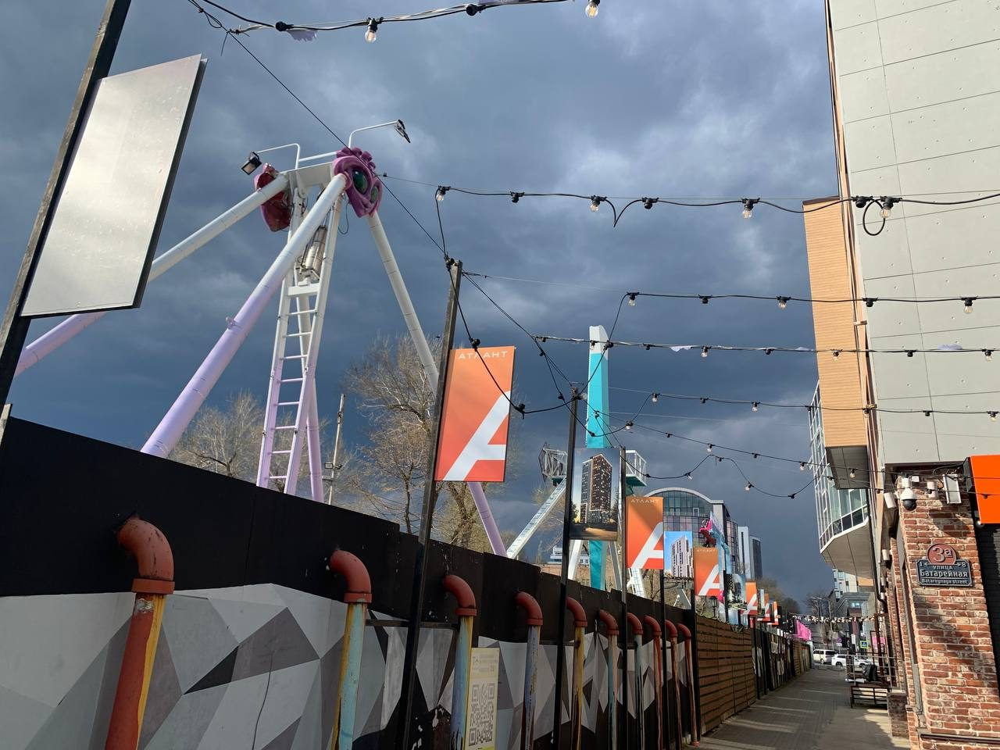

Выставочный проект

Здесь не просто фотографии, а истории реальных работ Labeworx: задача, проектирование, производство, монтаж и результат.
Оформление пространств, события и предметные серии. У каждой работы — своя задача и свой масштаб.




Архив Labeworx гораздо больше этого сайта. Постепенно достаём из него проекты, процессы и истории — и добавляем сюда.